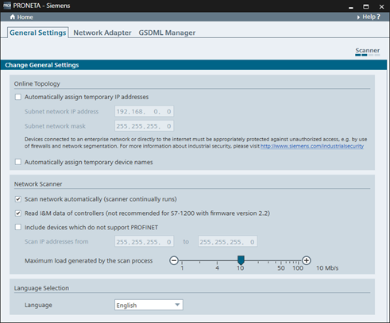

In the “Settings” window, there are three different tabs available:
These modes are used to adjust the operational details of PRONETA Basic.
You can set various parameters in connection with the network scan and visualization here.

|
NOTE |
Changes introduced here will take effect immediately. You will not be asked for a confirmation of parameter changes. |